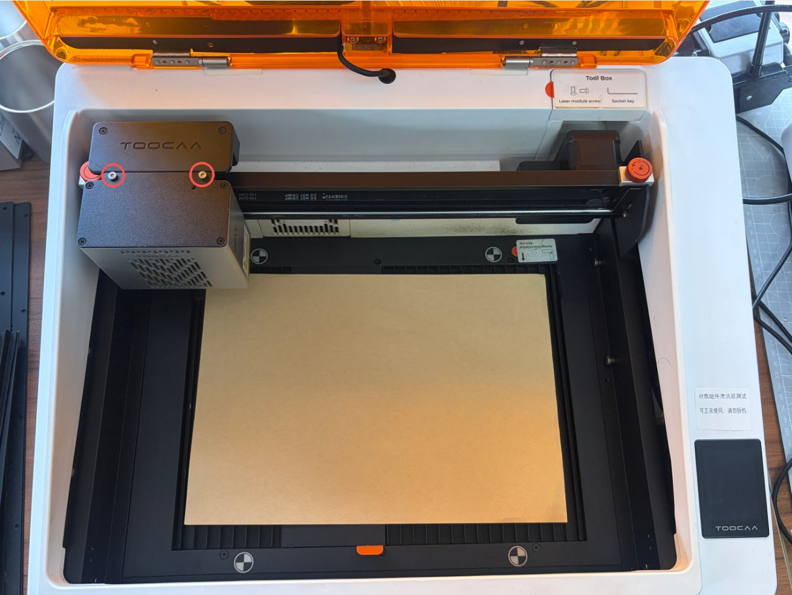

Identify the component, not just the word lens
These enclosed desktop lasers do not share a generic CO2 mirror-adjustment procedure. Identify the machine and installed module before accessing optics. NOVA's illustrated window guide applies specifically to its 10W and 20W modules; the infrared module and L2 need their own matching instructions.

Prepare clean tools and a cold, disconnected module
Stop, switch off, unplug and allow cooling. Keep a clean exterior cloth separate from dedicated lens tissue or a lens-cleaning cloth. Use an optical cleaner compatible with the window coating only when wet cleaning is needed. Do not spray into the module or reuse a dirty wipe from the outer housing on the optical surface.
For a NOVA 10W or 20W window
Follow the current illustrations while supporting the module.
- Remove the two securing screws, support the module and slide it out horizontally as shown.
- Clean the exterior first, then lift the Focus Module straight up by its body, not the probe.
- Remove loose dust and gently clean the window with fresh lens-cleaning material.
- Inspect the dry surface for remaining deposits, scratches, cracks or burn marks.
- Reinstall the Focus Module, seat the laser module correctly and tighten both securing screws before restoring power.
Replace a damaged window instead of rubbing harder
The NOVA guide distinguishes removable contamination from damage or marks that remain after cleaning. A replacement must match the installed module. Do not scrape the surface or overtighten its threaded metal ring. For L2, use the manufacturer's linked module/lens instructions rather than copying NOVA removal steps. After correct reassembly, verify a small suitable sample and stop if focusing or output remains abnormal.